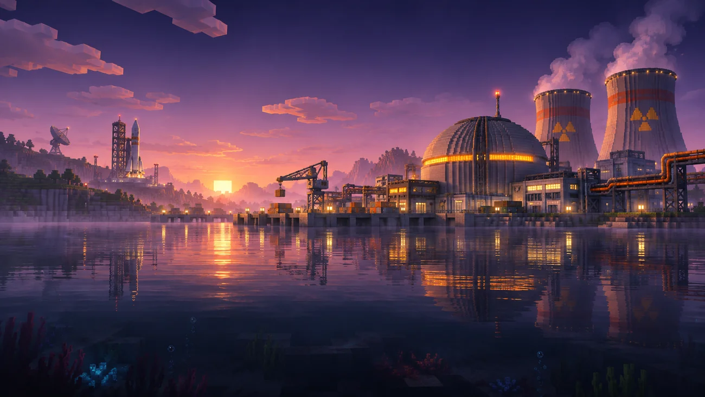
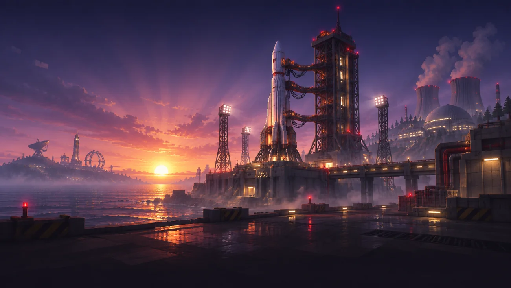

01 / NUCLEAR TECH
Ядерная промышленность
Реакторы, топливные цепочки, радиация и сложные технические системы HBM.
От первых механизмов до атомной энергетики и космических горизонтов. Новая эпоха индустриального Minecraft.
Nuclear Tech: Second Dawn — самостоятельная сборка Minecraft 1.20.1 от BySally, созданная вокруг HBM NTM Continuum, его космического дополнения и сложной инженерной автоматизации.
В основе квестовой системы — адаптированные материалы Nuclear Tech: New Horizons. Проект развивается отдельно, с указанием оригинальных авторов и сохранением их лицензий.
Исследовать возможностиЧетыре ключевых направления, объединённых в одной технологической песочнице.

Реакторы, топливные цепочки, радиация и сложные технические системы HBM.
AE2, ProjectRed, CC: Tweaked и инженерная логистика для больших заводов.
Адаптированная квестовая книга NTNH с многоэтапным технологическим развитием.

Космические технологии и исследование новых горизонтов с HBM Continuum Space.
История разработки NTSD. События добавляются вручную, без вымышленных релизов.
Клиент и сервер проверены (123 и 94 JAR). Публичный релиз задержан аудитом модов и лицензий; Terralith отключён.
Созданы космическая анимация главного меню и новые визуальные материалы Nuclear Tech: Second Dawn.
Bufka2011 разрешил использование своих наработок с указанием авторства и ссылкой на оригинальный проект.
Клиентская сборка и выделенный сервер будут доступны отдельно после публичного релиза.
Minecraft 1.20.1 · Forge · NTSD. Установка сборки для одиночной и сетевой игры.
Публичный релиз готовитсяПока доступна только локальная alpha-версия.Отдельный набор для запуска выделенного Forge-сервера, без клиентских графических модов.
Публичный релиз готовитсяПубликация после проверки совместимости.Нашёл баг, вылет, ошибку рецепта или несовместимость? После открытия репозитория отправляй отчёт через GitHub Issues: там будет форма с версией, шагами и логами.